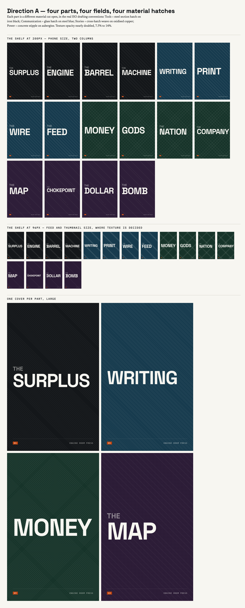
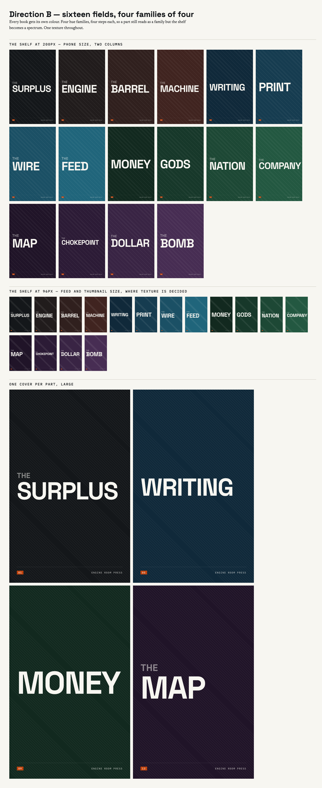
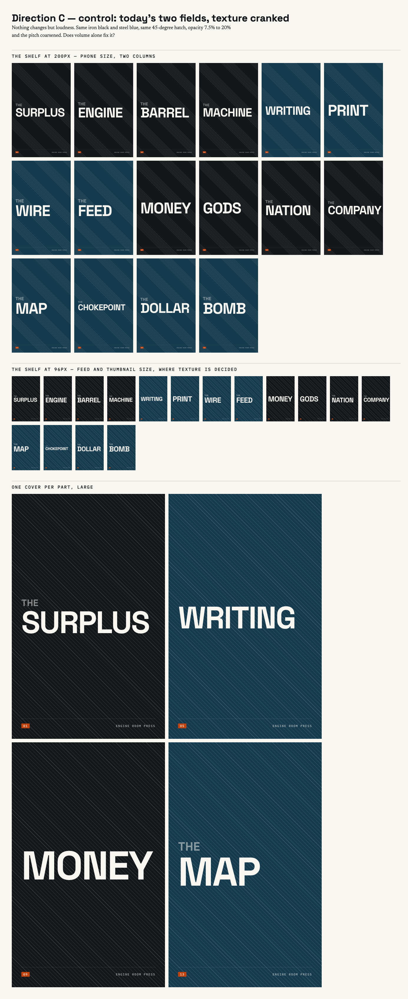

You said the textures were too subtle and the thing looked boilerplate. Three directions were built and rendered as the whole shelf — all sixteen covers, at phone size and at 96px, which is the size a cover is in a feed. A is now live. If you want B or C instead, say the letter.
A is live — four parts, four colours, four materials.
Direction A
Each part gets its own colour and its own hatch, taken from the real engineering drawing conventions: Tools is steel on iron black, Communication is glass on steel blue, Stories is a woven cross-hatch on oxidised copper, Power is concrete stipple on aubergine. The texture is about twice as strong as before and all four survive being shrunk to a thumbnail. You can tell which part a book is in before you read the title.

Direction B — rejected
Every book its own colour, four families of four. The most colourful, and it breaks two rules. Warming Part I turns The Barrel and The Machine brown, which is the sepia-and-parchment look we refuse. And the family breaks stop being visible, so the four parts disappear.

Direction C — rejected
The control. It proves loudness alone was not the fix: the hatch is clearly visible now and the shelf is still two colours in a checkerboard. It answers "too subtle" and not one word of "boilerplate".
